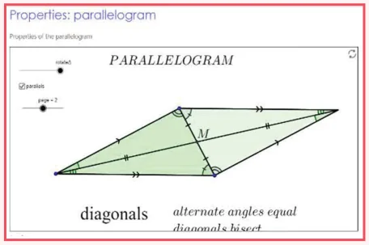
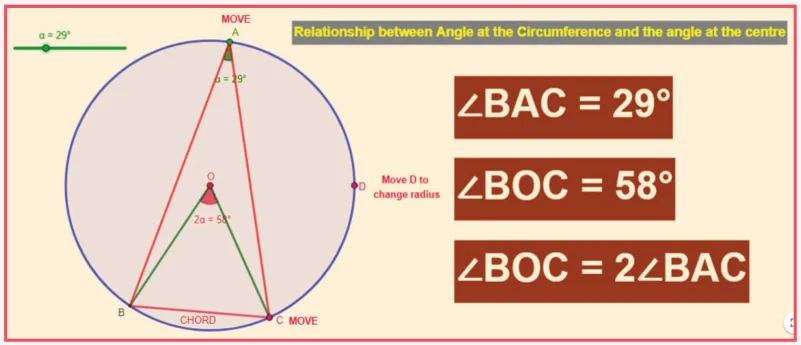

ICT Corner-1
Expected Result is shown in this picture

Step 1
Open the Browser and copy and paste the Link given below (or) by typing the URL given (or) Scan the QR Code.
Step 2
GeoGebra worksheet "Properties: Parallelogram" will appear. There are two sliders named "Rotate" and "Page"
Step-3
Drag the slider named "Rotate "and see that the triangle is doubled as parallelogram.
Step-4
Drag the slider named "Page" and you will get three pages in which the Properties are explained.
Browse in the link
Properties: Parallelogram: https://www.geogebra.org/m/m9Q2QpWD
ICT Corner-2
Expected Result is shown in this picture

Step 1
Open the Browser type the URL Link given below (or) Scan the QR Code. GeoGebra work sheet named "Angles in a circle" will open. In the work sheet there are two activities on Circles.
The first activity is the relation between Angle at the circumference and the angle at the centre. You can change the angle by moving the slider. Also, you can drag on the point \(A\), \(C\) and \(D\) to change the position and the radius. Compare the angles at \(A\) and \(O\).
Step 2
The second activity is "Angles in the segment of a circle". Drag the points \(B\) and \(D\) and check the angles. Also drag "Move" to change the radius and chord length of the circle.
Browse in the link
Angle in a circle: https://ggbm.at/yaNUhv9S or Scan the QR Code.